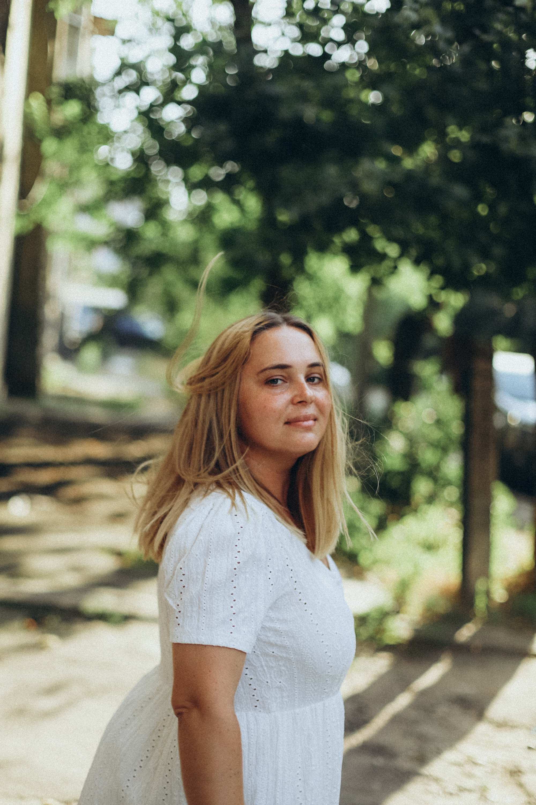

Resume
Gerashchenko Iraida Igoravns
UA

Posotion
Project manager in NGO
Education
- Master's degree 2021-2022 "Business analytics and project management"
- In 2013, she graduated from the post-graduate course "Design of fibrous materials"
- Graduate Certificate in Higher Education - Kherson National Technical University, Faculty of Technology and Design, specialty "Chemical technology and design fibres and materials", 2008